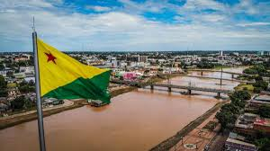

O Acre é um estado localizado no Norte do Brasil, fazendo fronteira com a Bolívia e o Peru. Sua capital é Rio Branco. A região é predominantemente composta por florestas tropicais e é conhecida pela sua biodiversidade. O estado tem uma economia baseada na agricultura, pecuária e extrativismo, com destaque para a produção de borracha. A história do Acre está fortemente ligada à luta pela posse da terra, especialmente com o Tratado de Petrópolis, que incorporou o território ao Brasil em 1903.
